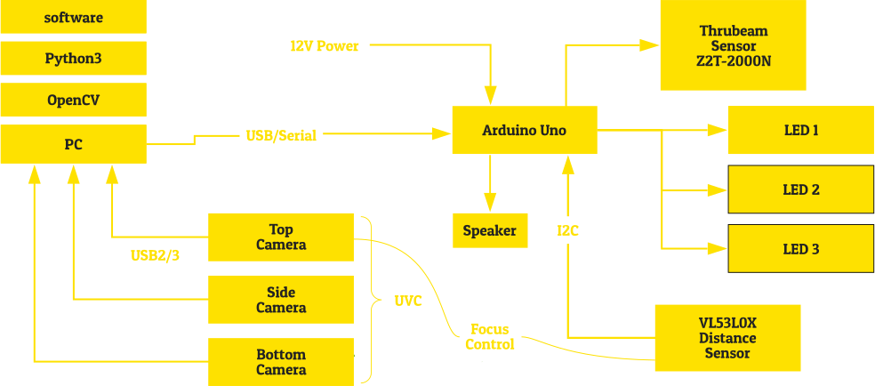

Open
Book Camera
v1
汎用的なデバイスで構成される
高速な書影撮影システム
今日、商用出版物の書影（本の表紙画像）の流通性は飛躍的に効率化した一方で、図書館が所蔵する地域資料や一般流通に乗らない本の書影情報は流通することがありませんでした。これらの問題を解決するため、カーリルではまったく新しい撮影システム（ブックカメラ）を開発しました。私たちはこのブックカメラの活用シーンを広げるため、開発したすべての設計図面・制御用のハードウェア・ソフトウェアをオープンソース（クリエイティブ・コモンズライセンス）で公開することにしました。商用・非商用を問わずだれでも自由にブックカメラを複製し、改造したり、製造、販売することができます。
2秒で3面高速撮影
ブックカメラは、表紙・裏表紙・背の3面を同時に撮影します。ウェブサービスやアプリの開発者からは、背の画像が欲しいという要望が多く寄せられています。背の画像がデータベース化されることにより、本をまとめて表示する際の表現の多様化や、本棚を撮影することによる本の自動認識など様々な技術革新が期待できます。また、ISBNや図書館で貼付される管理バーコードも同時に読み取ることができるため、撮影時に撮影対象の固有コードを管理する必要はありません。
本を置いたら自動撮影
高性能センサにより本が置かれたことを適確に検出し、自動的に撮影を開始します。撮影中はコンピューターの操作は一切不要です。本棚から本を取り出し、撮影台にセットする時間を考慮すると、1分間に約15冊の本を撮影することができます。
スタンドアロン動作
撮影ソフトウェアは、地下の書庫などインターネットの無い環境でも動作します。そのため、電源さえ確保できればどこでも撮影可能です。また、環境光の影響を軽減するフレーム構造により、どんな環境でも安定した撮影を実現します。
システム構成
スペック
Height: 80.0 cm
Width: 80.5 cm
Depth: 40.0 cm
Weight: 16.7 kg
動作環境
USB 2.0 4ポート
Intel Core i7 程度のCPU
4GB以上のメモリ
OpenCVが動作するOS(Windows/Mac/Linux)
購入する
この製品は、オープンブックカメラの最新の設計に基づきありののままの形で提供されます。 ブックカメラの機能や性能について一切の保証はありません。 購入者は、自由に部品を交換したり、配置を変更することができます。 また、関連するソフトウェアもすべてオープンソースで提供されます。 なお、付属PC以外を接続した場合の技術的問題について、直接的なサポートの提供は行いません。 （Facebookページにおいて相談することができます）
ライセンス
FAQ
Q.薄い冊子やチラシなどには対応できますか
およそ2mm以下の冊子は距離センサーで厚さ0mmと判定されます。実質的に背画像は意味がありませんが、撮影します。
背画像がないことはデータで認識できます。（撮影時に取得した本の厚さはJSON形式で保存されるため）
Q.どのようなバーコードに対応していますか
標準で、EANコード（ISBN、JANコード）とNW7（Codabar）に対応しています。ソフトウェアを変更することでさらに多くのバーコードに対応可能です。撮影時に読み取ったバーコードはJSON形式で保存されます。
Q.どれくらいの厚さまで対応していますか
10cm程度まで撮影できるよう設計しています。これは製本機の限界が8cmであることに基づきます。（出典）
Q.どれくらいのサイズに対応していますか
A4サイズまで撮影することを設計目標としています。実際にはBRUTUSのサイズまで撮影することができました。